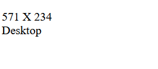
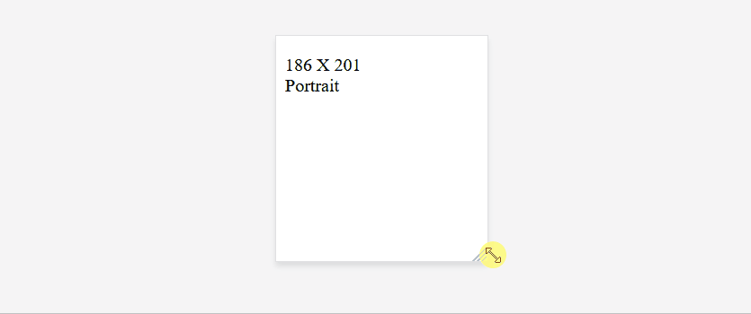
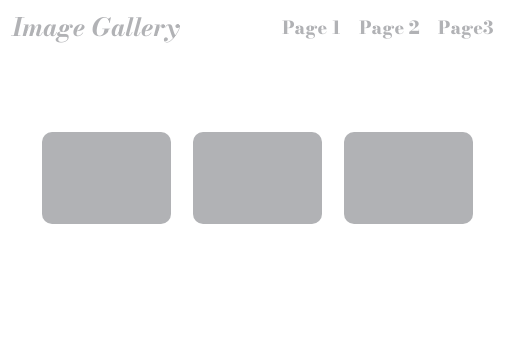

Het gebruik van CSS voor het maken van een responsieve website is over het algemeen de beste aanpak omdat CSS specifiek is ontworpen voor het stylen van webpagina’s, inclusief het aanpassen van lay-outs op verschillende schermgroottes. Het laden van CSS-bestanden is sneller en efficiënter dan het uitvoeren van JavaScript-code.
Maar, in bepaalde situaties kan het nuttig zijn om JavaScript te gebruiken voor aanvullende responsieve functionaliteit.
Voorbeeld
Maak onderstaand voorbeeld na:

// wacht tot de DOM volledig geladen is
document.addEventListener("DOMContentLoaded", function() {
let siteWidth = window.innerWidth;
let siteHeight = window.innerHeight;
// width & height laten zien op de pagina
document.getElementById("width").innerHTML = siteWidth;
document.getElementById("height").innerHTML = siteHeight;
// portrait or landscape
if (siteHeight > siteWidth) {
document.getElementById("landscapeOrPortrait").innerHTML = "Portrait";
} else {
document.getElementById("landscapeOrPortrait").innerHTML = "Desktop";
}
});
<span id="width"></span> X <span id="height"></span>
<br>
<span id="landscapeOrPortrait"></span>
✏️
Als je deze code uittest zal je merken dat deze niet optimaal is. Onderstaande code zal dit probleem oplossen.
// wacht tot de DOM volledig geladen is
document.addEventListener("DOMContentLoaded", function() {
function screenChange() {
// width & height opvragen
let siteWidth = window.innerWidth;
let siteHeight = window.innerHeight;
// width & height laten zien op de pagina
document.getElementById("width").innerHTML = siteWidth;
document.getElementById("height").innerHTML = siteHeight;
// portrait or landscape
if (siteHeight > siteWidth) {
document.getElementById("landscapeOrPortrait").innerHTML = "Portrait";
} else {
document.getElementById("landscapeOrPortrait").innerHTML = "Desktop";
}
}
window.addEventListener('resize', screenChange); // Voer de functie uit wanneer het scherm veranderd
screenChange(); // Voer de functie uit om de eerste keer de waarden te laten zien
});

Deze code zorgt ervoor dat wanneer we de grootte van het scherm aanpassen onze pagina geüpdatet zal worden.
- Zet de code om de grootte van het scherm te vinden in een functie.
function screenChange() - Voer de functie uit elke keer als de grootte van de pagina veranderd.
window.addEventListener('resize', screenChange); - Nu zal de code enkel uitgevoerd worden wanneer we de pagina van grootte veranderen, en dus niet wanneer we de pagina openen. Daar om moeten we de functie ook nog eens uitvoeren.
screenChange();
Oefening: Navbar & hamburger menu
✏️
Werk verder van "oefening: Responsive CSS".


Geef je gallery een responsive menu:
- Desktop:
- Een horizontale navbar.
- Mobile:
- Een hamburger menu dat een full-screen menu opent.
🤯
TIP
Met deze CSS-regel kan je een HTML-element verwijderen:
.hide {
display: none;
}